4.7. 配对矩阵，类别以及核函数¶
sklearn.metrics.pairwise子模块实现了用于评估
成对距离或样本集合之间的联系的实用程序。
本模块同时包含距离度量和核函数，对于这两者这里提供一个简短的总结。
距离度量是形如 d(a, b) 的函数，如果 目标 a 和 b 被认为 “更加相似” 相比 目标 a
和 c，那么 d(a, b) < d(a, c)。两个完全相同的目标的距离是零。最广泛使用的例子就是欧几里得距离。
为保证是 ‘真实’ 的度量，其必须满足以下条件:
1. 对于所有的 a 和 b，d(a, b) >= 0,
2. 正定性：当且仅当 a = b时，d(a, b) == 0
3. 对称性：d(a, b) == d(b, a)
4. 三角不等式：d(a, c) <= d(a, b) + d(b, c)
核函数是相似度的标准，即如果目标 a 和 b 相比 a 和 c“更加相似”， 那么``s(a, b) > s(a, c)``。
核函数必须是半正定性的。
存在许多种方法将距离度量转换为相似度标准，例如核函数。假定``D``是距离，并且``S``是核函数:
S = np.exp(-D * gamma), 其中``gamma`` 的一种选择是``1 / num_features``S = 1. / (D / np.max(D))
4.7.1. 余弦相似度¶
cosine_similarity 计算L2正则化的向量的点积。也就是说，如果  和
和  都是行向量,
它们的余弦相似度
都是行向量,
它们的余弦相似度  定义为:
定义为:
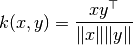
这被称为余弦相似度，因为欧几里得(L2) 正则化将向量投影到单元球内，那么它们的点积就是被向量表示的点之间的角度。
这种核函数对于计算以tf-idf向量表示的文档之间的相似度是一个通常的选择。
cosine_similarity 接受 scipy.sparse 矩阵.
(注意到``sklearn.feature_extraction.text``中的tf-idf函数能计算归一化的向量，在这种情况下 cosine_similarity
等同于 linear_kernel，只是慢一点而已。)
References:
- C.D. Manning, P. Raghavan and H. Schütze (2008). Introduction to Information Retrieval. Cambridge University Press. http://nlp.stanford.edu/IR-book/html/htmledition/the-vector-space-model-for-scoring-1.html
4.7.2. 线性核函数¶
- 函数
linear_kernel计算线性核函数，也就是一种在degree=1和coef0=0(同质化) 情况下的 polynomial_kernel的特殊形式。
如果 x and y 是列向量，它们的线性核函数是:
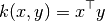
4.7.3. 多项式核函数¶
函数 polynomial_kernel 计算两个向量的d次方的多项式核函数。 多项式核函数代表着两个向量之间的相似度。
概念上来说，多项式核函数不仅考虑相同维度还考虑跨维度的向量的相似度。当被用在机器学习中的时候，这可以原来代表着特征之间的
相互作用。
多项式函数定义为:
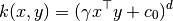
其中:
x,y是输入向量d核函数维度
如果 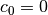 那么核函数就被定义为同质化的。
4.7.4. S型核函数¶
函数 sigmoid_kernel 计算两个向量之间的S型核函数。 S型核函数也被称为双曲切线或者
多层感知机(因为在神经网络领域，它经常被当做激活函数). S型核函数定义为:
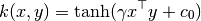
其中:
x,y是输入向量是斜度
- 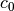 是截距
4.7.5. RBF核函数¶
函数 rbf_kernel 计算计算两个向量之间的径向基函数核 (RBF) 。
其定义为:
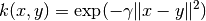
其中 x 和 y 是输入向量。如果 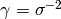
核函数就变成方差为  的高斯核函数。
的高斯核函数。
4.7.6. 拉普拉斯核函数¶
函数 laplacian_kernel 是一种径向基函数核的变体，定义为:
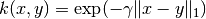
其中 x and y 是输入向量并且 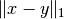 是输入向量之间的曼哈顿距离。
已被证明在机器学习中运用到无噪声数据中是有用的。 可见例如 Machine learning for quantum mechanics in a nutshell.
4.7.7. 卡方核函数¶
在计算机视觉应用中训练非线性支持向量机时，卡方核函数是一种非常流行的选择。
它能以 chi2_kernel 计算然后以参数 ``kernel=”precomputed”``传递到
sklearn.svm.SVC
>>> from sklearn.svm import SVC
>>> from sklearn.metrics.pairwise import chi2_kernel
>>> X = [[0, 1], [1, 0], [.2, .8], [.7, .3]]
>>> y = [0, 1, 0, 1]
>>> K = chi2_kernel(X, gamma=.5)
>>> K
array([[ 1. , 0.36..., 0.89..., 0.58...],
[ 0.36..., 1. , 0.51..., 0.83...],
[ 0.89..., 0.51..., 1. , 0.77... ],
[ 0.58..., 0.83..., 0.77... , 1. ]])
>>> svm = SVC(kernel='precomputed').fit(K, y)
>>> svm.predict(K)
array([0, 1, 0, 1])
也可以直接使用 kernel 变量:
>>> svm = SVC(kernel=chi2_kernel).fit(X, y)
>>> svm.predict(X)
array([0, 1, 0, 1])
卡方核函数定义为
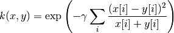
数据假定为非负的，并且已经以L1正则化。 归一化随着与卡方平方距离的连接而被合理化，其是离散概率分布之间的距离。
卡方核函数最常用于可视化词汇的矩形图。
References:
- Zhang, J. and Marszalek, M. and Lazebnik, S. and Schmid, C. Local features and kernels for classification of texture and object categories: A comprehensive study International Journal of Computer Vision 2007 http://research.microsoft.com/en-us/um/people/manik/projects/trade-off/papers/ZhangIJCV06.pdf